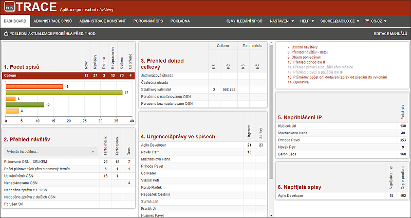

Aplikace TRACE část supervizor
(Manuál pro ovládání aplikace verze 20180306)
Administrace je místo, kde Supervizor (nadřízený inspektorů) může spravovat data (spisy) všech inspektorů. Cílem je mít rychlé informace o tom, co se s daty děje a v případě nesprávné situace může supervizor rychle zasáhnout.

Všechny funkcionality na straně supervizorské části jsou ovládány podobně, jako v části inspektora.